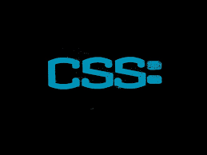

<h1>CSS Page</h1>
<hr>
<p>CSS는 HTML로 만들어진 콘텐츠에 레이아웃과 디자인요소를 정의하는 기술로 잘 설계된 css 는 재활용이 가능하며 나아가 테마, 템플릿의 형태로 확장할 수 있습니다<div class="br"></div> 또한 자바스크립트와 연계해 콘텐츠의 내용이나 디자인을 동적으로 처리할 경우에도 유용하게 사용됩니다.
<hr>

<hr>
<a href="./2.html">뒤로가기</a>